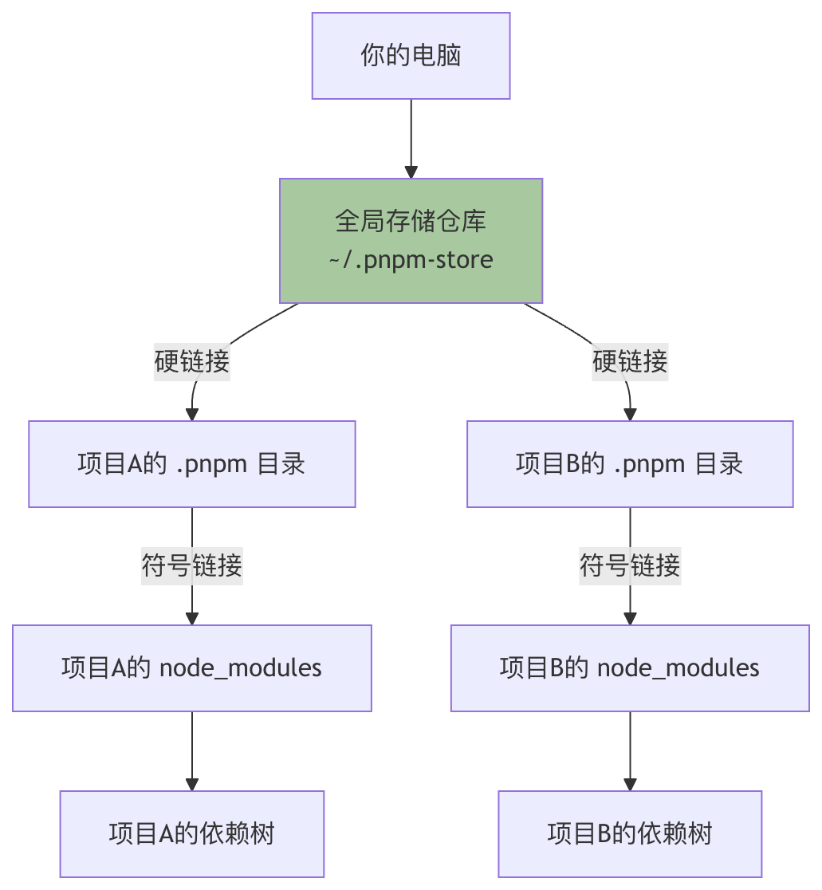

Introducción al uso de pnpm
Como desarrollador de Node.js, seguramente has oído hablar de
npm和yarn, son herramientas excelentes para gestionar las dependencias de proyectos. Pero ¿te has encontrado connode_modulescarpetas enormes, instalaciones lentas o la molestia de que el espacio en disco se llene rápidamente? Esto es lo que pnpm puede resolver.
pnpmes un gestor de paquetes de Node.js rápido y que ahorra espacio en disco. Almacena los paquetes mediante direccionamiento por contenido: todas las versiones de las dependencias se guardan de forma centralizada en una ubicación del sistema y luego se enlazan al proyecto mediante enlaces duros, evitando así instalaciones duplicadas.
El lema de pnpm esFast, disk space efficient package manager(rápido, gestor de paquetes que ahorra espacio en disco). No solo es rapidísimo, sino que además, mediante su singular mecanismo de enlaces, te ahorra una gran cantidad de espacio en disco y ancho de banda.
Instalar pnpm
Hay varias formas de instalar pnpm; puedes elegir según tus preferencias y el entorno del sistema.
Método 1: Instalar con npm (recomendado para todos los usuarios)
Este es el método más universal y sencillo. Abre tu terminal (los usuarios de Windows pueden usar PowerShell o CMD) y ejecuta el siguiente comando:
npm install -g pnpm
Este comando instalará pnpm en tu entorno global mediante npm.
Verificar si la instalación se realizó correctamente: Una vez completada la instalación, ejecuta el siguiente comando para comprobar la versión. Si el número de versión se muestra correctamente, la instalación ha sido exitosa.
pnpm --version
Salida similar a: 8.15.0
Método 2: Instalar con un script independiente
Para usuarios de macOS o Linux, puedes instalarlo con el siguiente script:
# macOS/Linux curl -fsSL https://get.pnpm.io/install.sh | sh - # Windows (PowerShell) iwr https://get.pnpm.io/install.ps1 -useb | iex
Uso de pnpm
Una vez que sabes instalarlo, ahora comencemos a usar pnpm de verdad. Sus comandos están diseñados de forma muy intuitiva; si conoces npm, casi puedes cambiar sin problema.
Inicializar un nuevo proyecto
Similar anpm init, pnpm se puede usar para inicializar un proyecto y crear elpackage.jsonarchivo.
# 交互式地回答问题，创建 package.json pnpm init # 快速创建一个带有默认值的 package.json pnpm init -y
Después de ejecutarpnpm init -y, obtendrás el más básicopackage.jsonarchivo:
Ejemplo
"name": "your-project-name",
"version": "1.0.0",
"description": "",
"main": "index.js",
"scripts": {
"test": "echo \"Error: no test specified\" && exit 1"
},
"keywords": [],
"author": "",
"license": "ISC"
}
Instalar paquetes de dependencias
El comando de instalación de pnpm espnpm add <package-name>, que equivale anpm install <package-name>。
# 安装所有依赖 pnpm install # 添加依赖包 pnpm add <package-name> # 添加开发依赖 pnpm add -D <package-name> # 添加全局包 pnpm add -g <package-name> # 安装指定版本 pnpm add <package-name>@<version>
Actualizar dependencias
# 更新所有依赖 pnpm update # 更新指定包 pnpm update <package-name> # 更新到最新版本(忽略 package.json 中的版本范围) pnpm update --latest
Eliminar dependencias
pnpm remove <package-name>
Ejecutar scripts
# 运行 package.json 中定义的脚本 pnpm run <script-name> # 一些常见的简写 pnpm start pnpm test pnpm build
Tabla de comparación de comandos de npm a pnpm
| Comando npm | Comando pnpm |
|---|---|
npm install |
pnpm install |
npm install <pkg> |
pnpm add <pkg> |
npm install <pkg> --save-dev |
pnpm add -D <pkg> |
npm install <pkg> --global |
pnpm add -g <pkg> |
npm update |
pnpm update |
npm uninstall <pkg> |
pnpm remove <pkg> |
npm run <script> |
pnpm run <script> |
npx <command> |
pnpm dlx <command> |
npm list |
pnpm list |
npm outdated |
pnpm outdated |
npm audit |
pnpm audit |
Archivo de configuración
pnpm admite la configuración mediante el.npmrcarchivo.
Crear este archivo en la raíz del proyecto permite personalizar el comportamiento de pnpm.
Ejemplos de configuración comunes
# 设置国内镜像源(淘宝) registry=https://registry.npmmirror.com # 自动安装 peer dependencies auto-install-peers=true # 严格模式 strict-peer-dependencies=true # shamefully-hoist(提升依赖,兼容某些工具) shamefully-hoist=true # 指定 node_modules 目录结构 node-linker=hoisted # 设置存储目录 store-dir=~/.pnpm-store
Ver la configuración actual
pnpm config list
Establecer una opción de configuración:
pnpm config set <key> <value>
Workspace (área de trabajo)
pnpm incluye un potente soporte para monorepos.
Define el workspace creando el archivo pnpm-workspace.yaml en la raíz del proyecto.
Ejemplo de configuración:
packages: - 'packages/*' - 'apps/*' <p> - '!**/test/**'Ejemplo de estructura del proyecto:
my-monorepo/
├── pnpm-workspace.yaml
├── package.json
├── packages/
│ ├── package-a/
│ │ └── package.json
│ └── package-b/
│ └── package.json
└── apps/
└── web-app/
└── package.json
Comandos del workspace
# 在所有工作区包中安装依赖 pnpm install # 在指定工作区执行命令 pnpm --filter <package-name> <command> # 在所有工作区执行命令 pnpm -r <command> # 递归运行脚本 pnpm -r run build # 为工作区添加依赖 pnpm --filter <package-name> add <dependency> # 添加工作区内部依赖 pnpm --filter package-a add package-b@workspace:*
Protocolo del workspace
Al hacer referencia a otros paquetes dentro del workspace, utiliza el protocolo `workspace:`:
json{
"dependencies": {
"package-a": "workspace:*",
"package-b": "workspace:^1.0.0"
}
}Características avanzadas
pnpm exec y pnpm dlx
# 执行本地安装的包 pnpm exec <command> # 执行远程包(类似 npx) pnpm dlx create-react-app my-app # 使用特定版本 pnpm dlx create-react-app@latest my-app
Ver el árbol de dependencias
# 查看依赖树 pnpm list # 指定深度 pnpm list --depth 2 # 只显示生产依赖 pnpm list --prod # 查看全局包 pnpm list -g
Ver dependencias desactualizadas
pnpm outdated
Auditar la seguridad de las dependencias
pnpm audit # 自动修复安全问题 pnpm audit --fix
Limpiar la caché
# 清理未使用的包 pnpm store prune # 查看存储位置 pnpm store path # 查看存储状态 pnpm store status
Importar lockfile
Al migrar desde otros gestores de paquetes:
# 从 package-lock.json 导入 pnpm import # 从 yarn.lock 导入 pnpm import
Parchear paquetes
Cuando necesites modificar temporalmente un paquete de dependencia:
# 创建补丁 pnpm patch <package-name>@<version> # 应用补丁后提交 pnpm patch-commit <path>
¿Qué es pnpm? ¿Cuáles son sus ventajas principales?
Antes de usarlo en profundidad, primero debemos entender el concepto central de pnpm y el cambio que aporta.
pnpm (Performant npm)es un gestor de paquetes de Node.js retrocompatible con npm, lo que significa que la gran mayoría de losnpmcomandos enpnpmse pueden usar directamente.
El objetivo de diseño de pnpm es resolver los cuellos de botella de los gestores de paquetes tradicionales (como npm y yarn) en cuanto al espacio en disco y la velocidad de instalación.
Los problemas de los gestores de paquetes tradicionales
Imagina que participas en 10 proyectos frontend diferentes de la empresa, y cada uno depende delodash@4.17.21. Con npm o yarn, estelodashpaquete se descargará y almacenará por completo 10 veces, en 10node_modulescarpetas diferentes de tu computadora. Esto causa un enorme desperdicio de espacio en disco.
La solución revolucionaria de pnpm: almacenamiento direccionable por contenido y enlaces duros
pnpm adopta una solución inteligente:
- Almacenamiento global: cuando instalas un paquete, pnpm almacena su contenido enun repositorio global de una sola versión(generalmente ubicado en
~/.pnpm-store）。 - Enlaces duros: en el
node_modulesde tu proyecto, pnpm no copia los archivos completos del paquete, sino que creaenlaces duros que apuntan a esos archivos en el almacenamiento global.Puedes entender un enlace duro como un "acceso directo avanzado" que comparte los mismos datos de disco con el archivo original. - Organización de enlaces simbólicos: para mantener
node_modulesla estructura plana (para facilitarrequireque las sentencias funcionen), pnpm crea un sofisticado conjunto deenlaces simbólicos(enlaces blandos) para organizar el árbol de dependencias.
Mediante este mecanismo,no importa cuántos proyectos dependan del mismo paquete, este paquete se guarda solo una vez en el disco físico. Esto aporta beneficios inmediatos:
- Ahorro de una gran cantidad de espacio en disco: para desarrolladores con múltiples proyectos, el efecto de ahorro es extremadamente notable.
- Velocidad de instalación extremadamente rápida: en instalaciones posteriores, si el paquete ya existe en el almacenamiento global, pnpm solo necesita crear enlaces, siendo varios órdenes de magnitud más rápido que descargar y descomprimir.
- Seguridad mejorada：
node_modulesLos archivos de paquete son de solo lectura (debido a que son enlaces duros), lo que evita el riesgo de que los scripts del proyecto modifiquen accidentalmente el contenido de las dependencias y garantiza la determinismo de las dependencias.

La imagen superior muestra claramente el flujo de trabajo central de pnpm: todos los proyectos comparten el mismo archivo de paquete en el almacenamiento global mediante enlaces duros, y luego en sus respectivosnode_modulesconstruyen la estructura de dependencias mediante enlaces simbólicos.
| Comparación de características | npm (v7+) / yarn | pnpm |
|---|---|---|
| Uso del espacio en disco | Las dependencias de cada proyecto se almacenan de forma independiente y ocupan mucho espacio. | Todos los proyectos comparten laúnica copia, por lo que la ocupación de espacio es muy baja. |
| Velocidad de instalación | Más lenta; requiere descargar, descomprimir y construir el árbol de dependencias. | Extremadamente rápida, especialmente en instalaciones posteriores, que consisten sobre todo en crear enlaces. |
node_modulesEstructura |
Plana o semiplana, puede provocar elevación de dependencias y problemas de dependencias fantasma. | Estrictaestructura no plana, que simula con precisión las relaciones de dependencia y elimina las dependencias fantasma. |
| Soporte de monorepos | Admite a través de Workspaces, pero el rendimiento tiene cuellos de botella. | Nativa y eficientesoporte de Workspaces; el rendimiento es su punto fuerte. |
| Modelo de gestión de paquetes | Copia archivos al proyecto durante la instalación. | Modelo de enlaces (enlaces duros + enlaces simbólicos). |
| Seguridad | Las dependencias pueden ser modificadas por los scripts del proyecto. | Los archivos de dependencias son enlaces duros de solo lectura, lo que ofrece mayor seguridad. |
Recursos oficiales：
Otras extensiones
Haz clic para compartir notas
<p style="font-size:14px;">¡La nota debe ser una ampliación del contenido de este artículo!</p><br> <p style="font-size:12px;"><a href="../tougao.html" target="_blank">Para enviar artículos, haga clic aquí</a></p> <p style="font-size:14px;"><a href="../w3cnote/runoob-user-test-intro.html" target="_blank">Cómo obtener el código de invitación de registro</a></p> <h3 class="text-muted"><i class="fa fa-info-circle" aria-hidden="true"></i> ¡Debe <a href=";.html" class="runoob-pop">iniciar sesión</a> antes de compartir notas!</h3> <p><a href="../w3cnote/runoob-user-test-intro.html" target="_blank">Cómo obtener el código de invitación de registro</a></p>